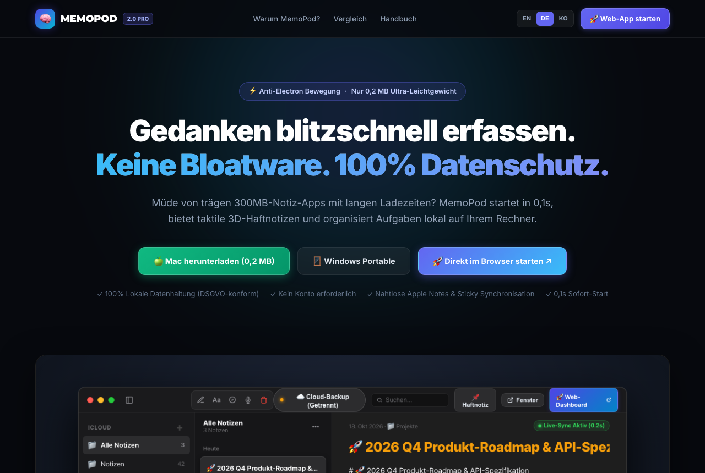
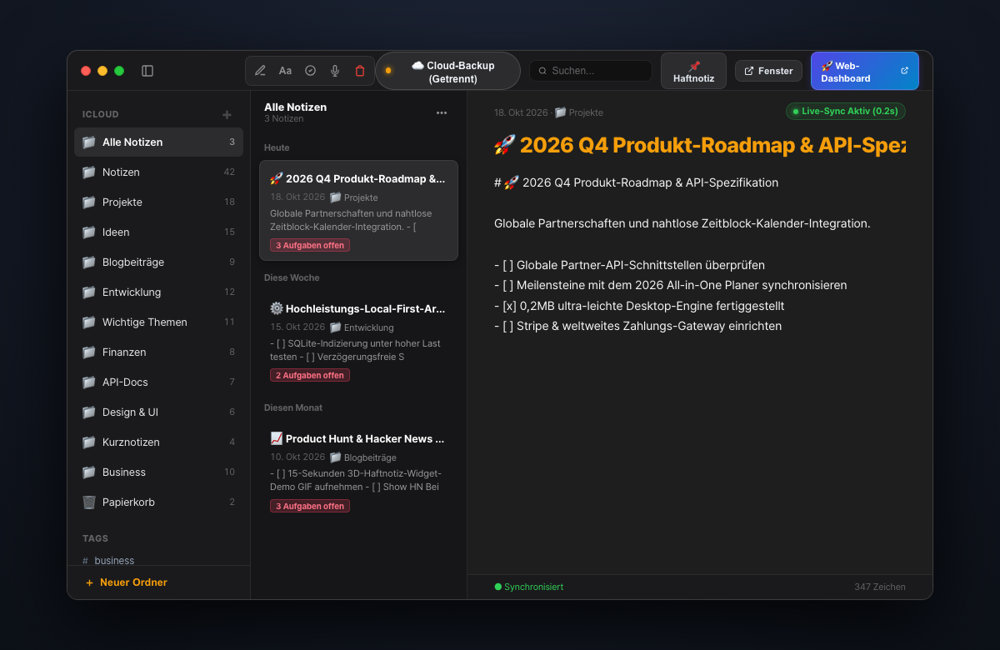
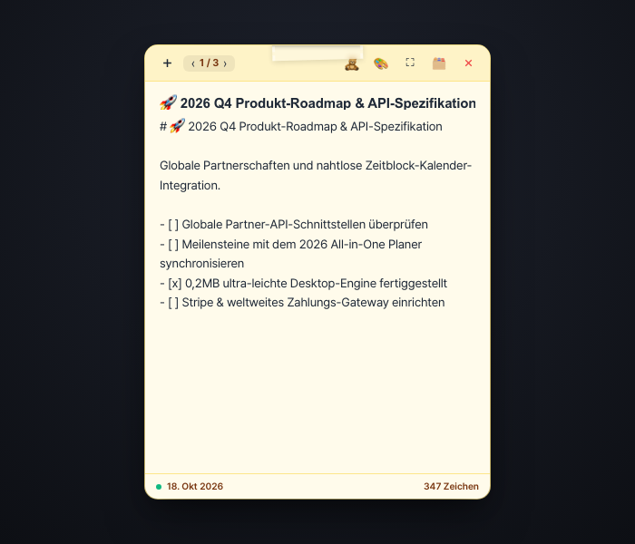
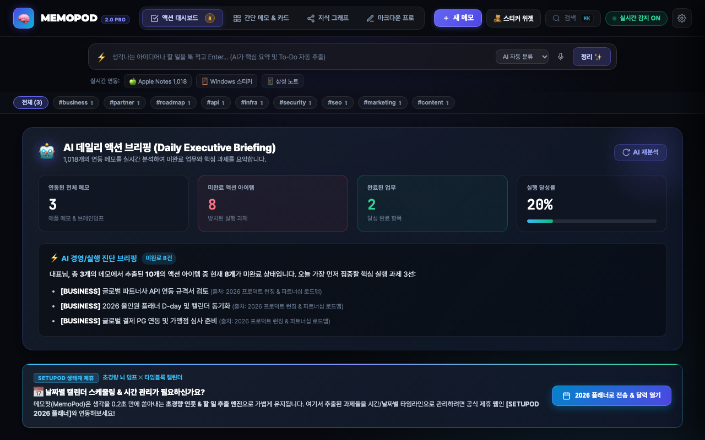

Gedanken blitzschnell erfassen.
Keine Bloatware. 100% Datenschutz.
Vollständiges Benutzerhandbuch für MemoPod 2.0: Das extrem schlanke (0,2 MB) Produktivitätssystem mit taktilen 3D-Haftnotizen und lokaler Wissensorganisation.
1. Schnellstart & Installation
Entwickelt auf nativen Browser-Primitiven ohne schweres Electron. Startet in 0,1s ohne Speicherüberlastung.

2. 3-Spalten-Notizen (Apple Notes Pro)
Das minimalistische Design von Apple Notizen kombiniert mit moderner Wissensverwaltung – blitzschnell und ohne komplexe Konfiguration.

- [ ] Checklisten zeigen automatisch den Badge Offene Aufgaben in der Liste an.3. 3D-Haftnotiz-Widget (Sticky Notes)
Ein taktiles Schreibtisch-Widget für wichtige Deadlines und spontane Gedanken, genau wie ein echter Post-it-Zettel.

4. KI-Webzentrale & Tägliches Briefing
Die KI analysiert Ihre Notizen und fasst die wichtigsten Tagesaufgaben und Meilensteine in einem übersichtlichen Dashboard zusammen.

5. Geräteübergreifende Synchronisierung
Ob Mac, Windows, iPhone oder iPad – alle Notizen werden verschlüsselt und in Echtzeit synchronisiert.